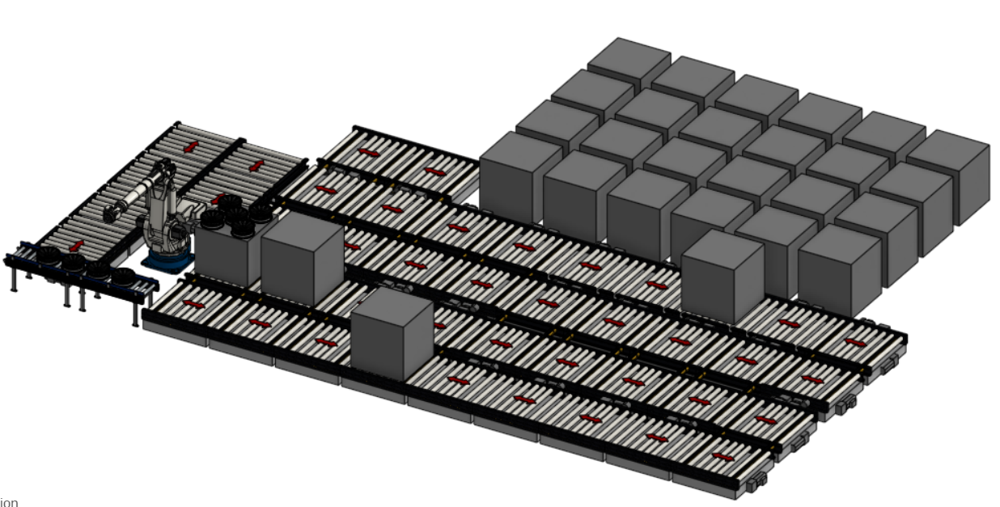
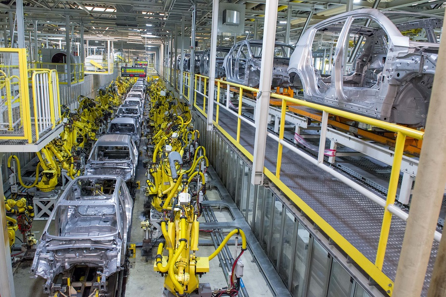

Overview
During my internship at Kia's Žilina manufacturing facility, I rotated through all five maintenance
departments (Press, Body, Paint, Assembly, and Engine), gaining comprehensive exposure to large-scale
automotive manufacturing. I led the development of a fully automated robotic tire loading system and
contributed to critical automation projects across the facility, working directly with robotic arms, PLC
programming, and vision systems.
Main Project: Automated Wheel Loading System
Led the design and implementation of a fully automated robotic wheel rim loading system, reported
directly to the Head of Group and Assembly Manager. This system eliminated the need for 3 employees
while creating a safer, more efficient work environment.
System Design & Components
- Robotic Manipulation: Hyundai robotic arm equipped with Festo pneumatic gripper to
grab rim interiors and suction cup jig to remove plastic layers between pallet stacks
- Bi-Directional Conveyor System: Intelligent conveyor network that lines up rim
pallets based on production order
- Automated Material Handling: System loads pallets and autonomously sequences them
for production
- Oversight Station: Single operator booth for monitoring, reducing workforce from 3
to 1 person

Redundancy & Failsafe Systems
- Conveyor Failure: System automatically reprograms pallet paths to avoid failed
conveyors
- Robotic Arm Backup: Backup robotic arm available if primary goes down
- Final Failsafe: Manual rim loading capability maintained for emergency situations
Department Rotations & Key Projects
Assembly Department
Worked on critical automation systems for the main assembly line, including maintenance of the magnetic
rail system and support during a new model launch.
- Repaired and maintained EMS door carriers, replacing outdated technology
- Troubleshot proprietary magnetic induction charged robotic rail system that lifts vehicle undersides
to chassis for mounting
- Performed PLC programming and tool head tuning to resolve machine malfunctions
- Supported new model launch, resolving machine interference issues during production ramp-up

Engine Department
Implemented advanced vision system for quality control in engine assembly, combining 3D scanning
technology with automated inspection.
- Installed Keyence camera-based vision system for engine valve spring alignment verification
- Programmed PLC logic to integrate vision system with production line
- Developed 3D scanning algorithm to identify spring valve alignment issues
- Created automated inspection workflow to catch defects before assembly continuation
Press Shop
Implemented critical safety systems for die changing operations while learning the metal stamping
process from raw coils to formed parts.
- Installed Keyence safety sensor system for automated die changing machinery
- Designed safety protocol ensuring no personnel in danger zone during die swaps
- Dies are massive steel blocks weighing thousands of pounds requiring careful handling
- Learned complete press operation from raw metal coil intake through stamped part production
Body Shop
Maintained the largest robotic workforce in the facility while developing PLC programming skills.
- Maintained over 300 autonomous welding robotic arms throughout the body shop
- Learned advanced PLC programming for robotic control systems
- Observed coordination of 400+ robotic arms welding stamped sheets into complete chassis
- Performed preventive maintenance and troubleshooting on high-speed welding operations
- Troubleshot robotic arm conflicts during new model launch where welding positions were millimeters
off specification
Body shop welding robots in operation during troubleshooting
Paint Shop
Observed the complete paint process including pre-treatment, coating application, and sealing
operations.
- Studied chassis immersion in 10+ different treatment liquids for corrosion protection
- Observed robotic arms applying sealers at critical joints and seams
- Learned about paint quality control and environmental compliance systems
- Understood coordination between automated and manual paint operations
Complete Manufacturing Process
Through my rotation across all departments, I gained end-to-end understanding of automotive
manufacturing:
- Press Shop: Raw metal coils stamped into body panels by precision dies
- Body Shop: 400+ robotic arms weld stamped sheets into complete chassis structure
- Paint Shop: Chassis treated in multiple chemical baths and sealed by robotic arms
- Assembly: Complete vehicle assembly with rigorous documentation and quality control
- Quality Systems: Every tool torque specification logged in central database with
operator tracking for legal compliance
Advanced Manufacturing Systems
Observed cutting-edge automation including the electric vehicle battery assembly station:
- Automated battery intake from external supplier trucks (supplier under NDA)
- Autonomous battery transport to assembly location
- Precision alignment system for battery-to-vehicle mounting
- Fully automated installation with quality verification
Technical Skills & Technologies
- Robotic Programming: Hyundai robotic arm programming, motion planning, and gripper
control
- PLC Programming: Logic development for automated systems and machine control
- Vision Systems: Keyence camera systems, 3D scanning, and automated inspection
- Safety Systems: Keyence safety sensors and zone monitoring
- Pneumatic Systems: Festo pneumatic grippers and actuation systems
- Conveyor Systems: Bi-directional conveyor programming and material flow
optimization
- CAD & Design: System layout and mechanical design for automation projects
- Manufacturing Systems: Large-scale assembly line operations and workflow
optimization
Impact & Results
- Eliminated 3 full-time positions through automation while improving workplace safety
- Created redundant failsafe systems ensuring continuous production capability
- Implemented vision systems improving engine assembly quality control
- Enhanced safety protocols for die changing operations in press shop
- Supported successful new model launch with minimal production disruption
Key Learnings
This internship provided unparalleled exposure to modern automotive manufacturing at scale. I learned
how thousands of components, hundreds of robotic systems, and dozens of processes must coordinate
perfectly to produce vehicles efficiently and safely. The experience taught me the critical importance
of redundancy in automation, the complexity of large-scale PLC systems, and how quality control and
legal compliance drive manufacturing decisions.
Working across all five departments gave me perspective on how each stage impacts the others - from
press shop tolerances affecting body shop welding, to paint shop requirements influencing assembly
procedures. This holistic understanding of manufacturing will nourish my engineering approach throughout
my career.
Note on Information Disclosure
Due to NDA compliance requirements, certain proprietary details, technical specifications, and project
documentation cannot be fully disclosed. The information presented here has been carefully reviewed to
respect confidentiality agreements while accurately representing the scope and impact of work performed.
← Back to All Experience